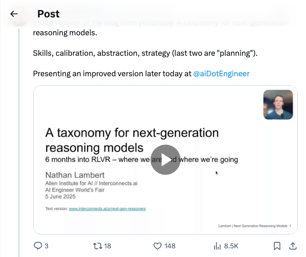

Twitter
OriolVinyalsML_发布Gemini 2.5 Pro预览版，性能显著提升
Published: 2025-06-05T19:26:13.000Z

Oriol Vinyals宣布推出全新的Gemini 2.5 Pro预览版，该版本在LMArena Elo评分上较前代提升了24分，展现出显著的性能飞跃。新模型在复杂编码（如AIME、AIDER）、科学（GPQA）和推理（HLE）等领域表现领先，并且根据用户反馈，其风格和结构也得到了优化，进一步提升了用户体验和模型能力。
natolambert_祝贺OpenThinker3-7B推理模型及数据集发布
Published: 2025-06-05T17:20:55.000Z
Ryan Marten团队发布了OpenThinker3-7B，这是一款新的SOTA开源7B推理模型，在代码、科学和数学评估中，其性能比DeepSeek-R1-Distill-Qwen-7B提升了33%。同时，他们还发布了OpenThoughts3-1.2M，这是目前最佳的开源推理数据集。Nathan Lambert对此表示祝贺，并称赞这是开放推理模型领域的开创性工作，具有重要影响力。
GaryMarcus_质疑大模型推理能力：是思考还是模式匹配？
Published: 2025-06-05T20:13:37.000Z
知名AI评论员Gary Marcus转发推文，对当前大型“推理模型”如o1/o3、DeepSeek-R1和Claude 3.7 Sonnet的真实能力提出质疑。他认为这些模型可能并非真正“思考”，而只是通过增加算力进行更复杂的模式匹配，尽管在数学和编码基准测试上有所进步。Marcus强调，这项工作可能揭示了LLM在推理方面的局限性，挑战了业界对“推理模型”的普遍认知。
natolambert_下一代推理模型分类法视频发布
Published: 2025-06-05T17:36:04.000Z

Nathan Lambert发布了关于下一代推理模型分类法的视频版本博客，该分类法涵盖了技能、校准、抽象和策略（规划）等关键要素。他表示，将在今日晚些时候的AI工程师大会上展示该分类法的改进版本。此推文聚焦于AI推理模型的前沿研究与进展，为理解复杂AI系统提供了新的视角。
MLStreetTalk_揭露Chatbot Arena严重问题及Cohere研究
Published: 2025-06-05T12:19:01.000Z
Machine Learning Street Talk（MLST）即将发布一期节目，深入探讨Chatbot Arena存在的严重问题。该节目将结合近期投资动态以及Cohere研究人员发表的一篇具有爆炸性的论文，该论文详细揭示了Chatbot Arena基准测试中的多项显著缺陷。此次讨论旨在引发业界对当前大模型评估方法和基准可靠性的关注与反思。
arcprize_AI推理系统测试：准确性与成本的权衡
Published: 2025-06-05T19:11:41.000Z
ARC Prize团队对主流AI推理系统进行了全面测试，结果显示目前尚无明确的领先者。研究发现，虽然叠加现代CoT（思维链）技术能提升准确性，但效率会显著下降。这表明在准确性与成本之间存在一个帕累托前沿，ARC-AGI被用作一致的衡量标准，揭示了AI推理能力与资源消耗间的权衡关系。
wechat
谷歌Gemini-2.5-Pro又升级，还是第一！
Published: 2025-06-05T23:55:33.000Z
谷歌最新发布的Gemini-2.5-Pro模型再次实现显著升级，在多项基准测试中巩固其领先地位。该模型在LMArena上的Elo评分提升24分至1470分，继续保持榜首；在WebDevArena上更是跃升35分至1443分，展现出卓越的编程能力。此外，Gemini-2.5-Pro在Aider Polyglot等高难度编程基准测试中持续领先，并在评估数学、科学、知识与推理能力的GPQA和“人类终极考试”（HLE）中表现出顶级性能。此次升级进一步彰显了谷歌在大型语言模型领域的强大实力和持续创新能力，使其在AI竞争中保持优势。
上海AI实验室造出首个「通才」机器人大脑：看懂世界+空间推理+精准操控全拿下
Published: 2025-06-05T23:30:36.000Z

上海人工智能实验室联合多方推出通用具身智能大脑框架VeBrain，该模型创新性地整合视觉感知、空间推理与机器人控制能力，使多模态大模型能直接操控物理实体，实现机器人“看懂-思考-行动”的闭环。VeBrain通过将机器人控制重构为MLLM子任务并引入机器人适配器，有效解决了多任务冲突与灾难性遗忘问题。其在多模态理解、视觉空间推理及机器人控制方面均达到最先进水平，性能超越现有MLLM和VLA模型，并在四足机器人和机械臂上验证了其泛化性与通用性，标志着机器人大脑框架的重大突破。
大模型结构化推理优势难复制到垂直领域！最新法律AI评估标准来了，抱抱脸评测集趋势第一
Published: 2025-06-05T05:00:43.000Z
最新研究揭示，尽管大语言模型在结构化推理任务中表现出色，但在法律等复杂垂直领域的非结构化推理能力仍面临挑战。苏黎世联邦理工学院等机构联合发布了多语言法律推理基准数据集LEXam，旨在全面评估LLM在法律领域的潜能与局限。LEXam不仅关注最终答案，更创新性地引入“LLM-as-a-Judge”模式，评估模型推理过程，并已在Hugging Face趋势榜位居前列。评测结果显示，专为推理优化的模型如Gemini-2.5-Pro在法律推理任务中表现最佳，而GPT-4系列通用模型亦表现不俗。该基准强调了法律推理的复杂性，包括规则回忆、规则适用及问题识别等，并指出当前主流LLM优化框架尚未充分解决这些挑战，为未来通用机器学习领域的研究提供了重要方向。
大神Karpathy炮轰复杂UI应用没有未来，Adobe首当其冲，网友：不提供文本交互，就是在阻挡AI浪潮
Published: 2025-06-05T05:00:43.000Z
大神Karpathy预言，在人机协同时代，仅依赖复杂UI而缺乏文本交互的应用将面临淘汰，点名Adobe、CAD等。他认为此类应用无法与大模型有效协同，阻碍了“氛围式编程”需求。此言论引发广泛讨论，支持者认为无脚本化后端阻碍AI浪潮，反对者则强调专业软件的特殊性及并非所有用户都适应文本交互。文章还提及Karpathy对“验证差距”的关注，批评当前大模型编程“重生成轻判别”模式，指出代码生成虽快但验证环节改进不足，编程本质在于“看代码”而非“写代码”。Karpathy正致力于开发AI辅助编程工作流以减轻验证负担，并设想通过可视化布局提升代码审查效率。
真实联网搜索Agent，7B媲美满血R1，华为盘古DeepDiver给出开域信息获取新解法
Published: 2025-06-05T04:41:34.000Z
华为诺亚方舟实验室提出Pangu DeepDiver模型，通过引入Search Intensity Scaling和Agentic RL训练范式，显著提升大型语言模型在真实互联网环境下的开域信息获取能力。该模型基于WebPuzzle数据集进行训练，使7B规模的Pangu DeepDiver在复杂知识密集型任务上表现媲美671B的DeepSeek-R1，并超越同期业界工作。研究强调了在真实互联网数据上进行强化学习的重要性，以克服传统RAG技术和基于Wiki训练的局限性，使模型能自适应调整搜索深度和频率，展现出强大的泛化能力和高阶信息检索推理能力，为构建更智能的联网Agent提供了新思路。
重磅！2025智源大会完整日程公布——全球AI先锋全阵容集结
Published: 2025-06-05T04:41:34.000Z
2025智源大会将于6月6日至7日线上线下联动举行，汇聚4位图灵奖得主、30余位AI企业创始人及100余位青年科学家，密集呈现180余场人工智能主题演讲。大会将深入探讨AI前沿技术与未来发展，涵盖脑科学与AI、医疗健康、生物医学、AI安全、开源生态、科学智能、具身智能、自动驾驶及大模型等多个核心领域，旨在为全球AI发展绘制航图，推动人工智能技术创新与产业应用。
huggingface
MiMo-VL 技术报告
Published: 2025-06-04T04:32:54.000Z

我们开源了 MiMo-VL-7B-SFT 和 MiMo-VL-7B-RL，这两个强大的视觉语言模型在通用视觉理解和多模态推理方面均展现出最先进的性能。MiMo-VL-7B-RL 在 40 项评估任务中的 35 项上超越了 Qwen2.5-VL-7B，并在 OlympiadBench 上取得了 59.4 分，甚至超越了参数量高达 78B 的模型。在 GUI 接地应用方面，它在 OSWorld-G 上以 56.1 分树立了新标准，甚至优于 UI-TARS 等专用模型。我们的训练结合了四阶段预训练（2.4 万亿 tokens）和融合了多样化奖励信号的混合在线策略强化学习（MORL）。我们发现将包含长链式思考的高质量推理数据融入预训练阶段的重要性，以及混合强化学习在同时进行多领域优化挑战下的优势。我们还贡献了一个涵盖 50 多项任务的综合评估套件，以促进可复现性并推动该领域的发展。模型检查点和完整的评估套件可在 https://github.com/XiaomiMiMo/MiMo-VL 获取。
推进多模态推理：从优化的冷启动到分阶段强化学习
Published: 2025-06-04T17:51:08.000Z

受Deepseek-R1在复杂文本任务中卓越推理能力的启发，许多工作尝试通过直接应用强化学习（RL）来激励多模态大型语言模型（MLLMs）具备类似能力。然而，它们在激活复杂推理方面仍面临挑战。本文不孤立地研究多模态强化学习，而是深入探讨了当前的训练流程，并识别出三个关键现象：1) 有效的冷启动初始化对于增强MLLM推理至关重要。有趣的是，我们发现仅使用精心选择的文本数据进行初始化，即使在多模态强化学习之前，其性能也能超越许多近期多模态推理模型。2) 应用于多模态强化学习的标准GRPO存在梯度停滞问题，这会降低训练稳定性和性能。3) 在多模态强化学习阶段之后，后续的纯文本强化学习训练进一步增强了多模态推理能力。这种分阶段训练方法有效平衡了感知基础和认知推理的发展。通过整合上述见解并解决多模态强化学习问题，我们引入了ReVisual-R1，在MathVerse、MathVision、WeMath、LogicVista、DynaMath以及具有挑战性的AIME2024和AIME2025等基准测试中，在开源7B MLLM中取得了新的最先进成果。
Orak：一个用于在多样化视频游戏中训练和评估LLM智能体的基础基准
Published: 2025-06-04T06:40:33.000Z

大型语言模型（LLM）智能体正在重塑游戏行业，尤其是在创建更智能、更符合人类偏好的游戏角色方面。然而，现有的游戏基准未能满足实际需求：它们缺乏对LLM在各种游戏类型中多样化能力的评估，缺乏对复杂游戏玩法至关重要的智能体模块的研究，以及缺乏用于将预训练LLM对齐为游戏智能体的微调数据集。为了弥补这些空白，我们提出了Orak，这是一个旨在训练和评估LLM智能体在多样化真实世界视频游戏中的基础基准。与现有基准不同，Orak包含12款涵盖所有主要游戏类型的热门视频游戏，从而能够全面研究LLM能力以及复杂游戏场景中必不可少的智能体模块。为了支持LLM的一致性评估，我们引入了一个基于模型上下文协议（MCP）的即插即用接口，使LLM能够无缝连接游戏并操作智能体模块。此外，我们提出了一个微调数据集，其中包含LLM在不同游戏类型中的游戏轨迹。Orak提供了一个全面的评估框架，包括通用游戏得分排行榜、LLM对战竞技场，以及对视觉输入状态、智能体策略和微调效果的深入分析，为构建通用游戏智能体奠定了基础。代码可在https://github.com/krafton-ai/Orak获取。
赋能小时级视频训练以实现长视频-语言理解
Published: 2025-06-05T17:59:04.000Z

近期长视频-语言理解基准的出现推动了视频大型多模态模型（Video-LMMs）的发展。然而，标注良好的长视频稀缺性使得小时级Video-LLMs的训练尚未得到充分探索。为弥补这一空白，我们提出了VideoMarathon，一个大规模小时级视频指令遵循数据集。该数据集包含约9,700小时的长视频，来源于不同领域，每段视频时长从3分钟到60分钟不等。具体而言，它包含330万高质量问答对，涵盖六个基本主题：时间性、空间性、对象、动作、场景和事件。与现有视频指令数据集相比，VideoMarathon显著将训练视频时长扩展至1小时，并支持22种需要短期和长期视频理解的多元任务。基于VideoMarathon，我们提出了Hour-LLaVA，一个用于小时级视频-语言建模的强大高效的Video-LMM。它通过利用一个记忆增强模块，实现了1帧/秒采样下的小时级视频训练和推理，该模块自适应地从缓存的完整视频上下文中整合用户问题相关和时空信息丰富的语义。在我们的实验中，Hour-LLaVA在多个长视频-语言基准测试中取得了最佳性能，证明了VideoMarathon数据集的高质量和Hour-LLaVA模型的优越性。
小型语言模型是智能体AI的未来
Published: 2025-06-02T18:35:16.000Z

大型语言模型（LLMs）因在广泛任务中展现出接近人类的性能以及其进行通用对话的能力而备受赞誉。然而，智能体AI系统的兴起正在催生大量应用，在这些应用中，语言模型重复执行少量专业任务，且变化甚微。本文提出，小型语言模型（SLMs）对于智能体系统中的许多调用而言，其能力已足够强大，本质上更具适用性，并且必然更经济，因此是智能体AI的未来。我们的论证基于SLMs当前展现的能力水平、智能体系统的常见架构以及语言模型部署的经济性。我们进一步论证，在通用对话能力至关重要的情境下，异构智能体系统（即调用多个不同模型的智能体）是自然的选择。我们讨论了SLMs在智能体系统中应用的潜在障碍，并概述了一种通用的LLM到SLM智能体转换算法。我们的立场，以价值声明的形式提出，强调了即使是部分从LLMs转向SLMs，也将对AI智能体行业产生重大的运营和经济影响。我们旨在激发关于有效利用AI资源的讨论，并希望推动降低当前AI成本的努力。我们呼吁对我们的立场提出贡献和批评，并承诺将所有此类通信发布在https://research.nvidia.com/labs/lpr/slm-agents。
SuperWriter：基于反思驱动的大语言模型长文本生成
Published: 2025-06-04T17:27:42.000Z

长文本生成对于大型语言模型（LLMs）来说仍然是一个重大挑战，尤其是在随着序列长度增加时，难以保持连贯性、确保逻辑一致性以及维持文本质量。为了解决这些局限性，我们提出了SuperWriter-Agent，一个基于智能体的框架，旨在提高长文本生成的质量和一致性。SuperWriter-Agent在生成流程中引入了明确的结构化思考规划和细化阶段，引导模型遵循一种更深思熟虑、更具认知基础的过程，类似于专业作家的写作方式。基于此框架，我们构建了一个监督微调数据集，用于训练一个7B的SuperWriter-LM。我们进一步开发了一种分层直接偏好优化（DPO）过程，该过程利用蒙特卡洛树搜索（MCTS）来传播最终质量评估并相应地优化每个生成步骤。在各种基准测试中的实证结果表明，SuperWriter-LM在自动评估和人工评估中均达到了最先进的性能，甚至超越了更大规模的基线模型。此外，全面的消融研究证明了分层DPO的有效性，并强调了结合结构化思考步骤对于提高长文本生成质量的价值。